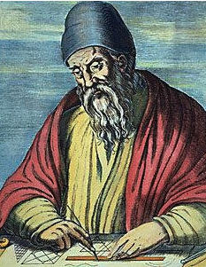
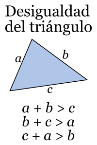

Euclides fue un matemático y geómetra griego,se le conoce como "el padre de la geometría". Desarrolló su trabajo en Alejandría en tiempos de Ptolomeo I Sóter, y fundó la escuela de matemáticas de la ciudad.Escribió Elementos, un texto que se compone de 13 secciones que explican las matemáticas detalladamente. Habla de temas como la geometría plana, la geometría sólida, las figuras en 3D, la proporción y la teoría de números.
Los postulados de Euclides, que aparecen en su libro "Los elementos" exponiendo los conocimientos geométricos de la Grecia clásica deduciéndolos a partir de cinco postulados, considerados los más evidentes y sencillos:
1.-Dos puntos distintos cualquiera determinan un segmento de recta.
2.-Un segmento de recta se puede extender indefinidamente en una línea recta.
3.-Se puede trazar una circunferencia dados un centro y un radio cualquiera.
4.-Todos los ángulos rectos son iguales entre sí.
5.-Postulado de las paralelas. Si una línea recta corta a otras dos, de tal manera que la suma de los dos ángulos interiores del mismo lado sea menor que dos rectos, las otras dos rectas se cortan, al prolongarlas, por el lado en el que están los ángulos menores que dos rectos.

Representación gráfica de euclides

El teorema de la altura
El teorema de la altura de Euclides propone que, en todo triángulo rectángulo, cuando se traza una recta que representa a la altura que corresponde al vértice del ángulo recto con respecto a la hipotenusa, se forman dos triángulos rectángulos a partir del original.
hc² = m x n

El teorema de los catetos
El teorema de los catetos de Euclides establece que en todo triángulo rectángulo un cateto es media proporcional entre la hipotenusa y su proyección sobre ella.
b²= c x m
a²= c x n
Teorema de desigualdad triangular
La desigualdad del triángulo es un teorema de la geometría euclidiana que establece que la suma de las longitudes de dos lados cualesquiera de un triángulo es mayor o igual que la longitud del tercer lado.
La desigualdad del triángulo es un teorema de la geometría euclidiana que establece que la suma de las longitudes de dos lados cualesquiera de un triángulo es mayor o igual que la longitud del tercer lado.
